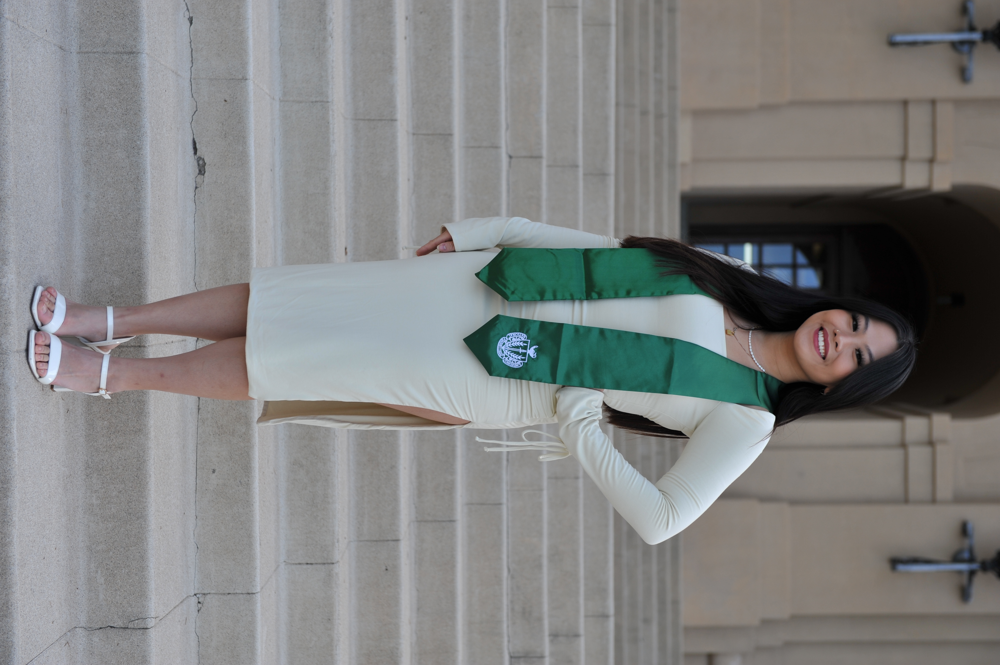
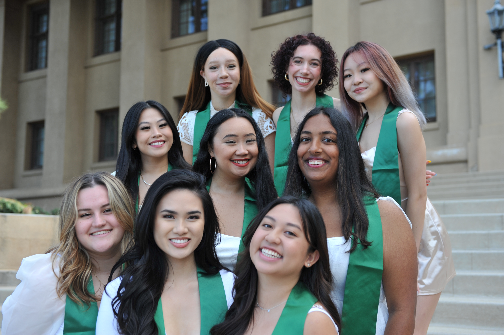
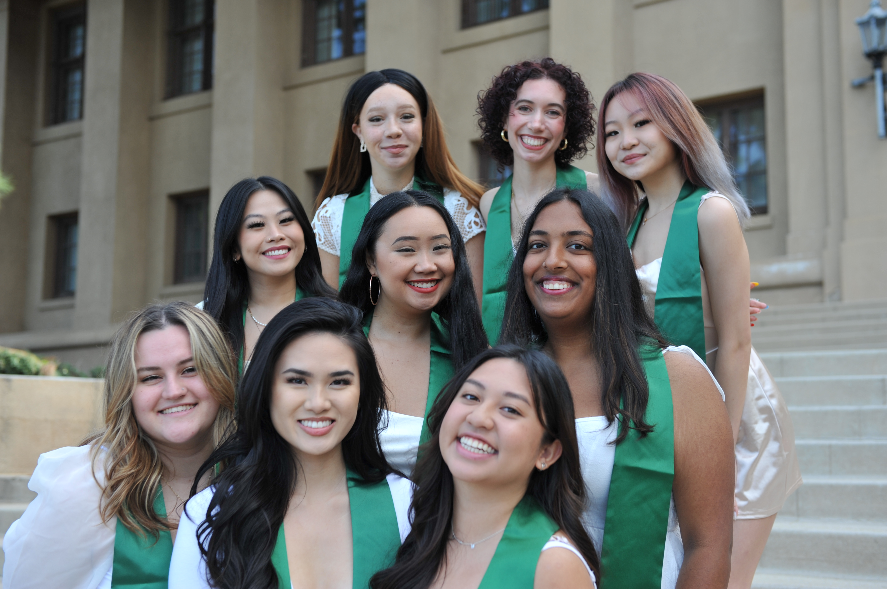
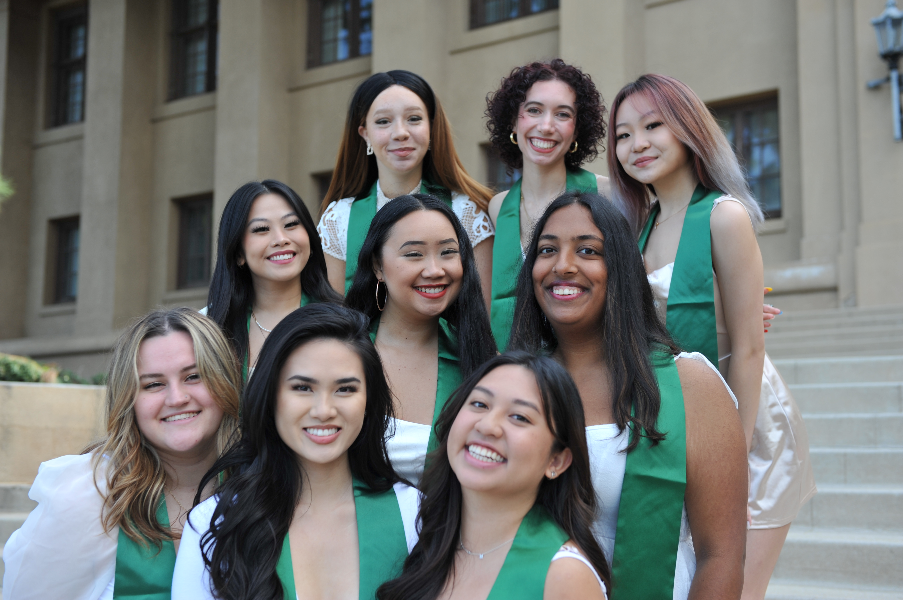

Hailey Tom
I am a 4th year UCR undergraduate and will soon be graduating in June with a B.S. in Biology. Prior to college, I went to Bishop O'Dowd Highschool in NorCal. I currently have a 3.6 GPA. My future plans include working part-timer as a medical scribe, full-time as a medical assistant, and then applying to PA school.
I've grown up in Hercules, CA, in the Bay Area for my entire life. I enjoy visiting my friends, going to museums, binging TV shows, and crocheting. So far I have crocheted a cat wearing an apron, two baby cows, and two pink bunny rabbits. I love making items for my close friends who are nice to me. I have recently visited the Los Angeles County Museum of Arts with my boyfriend and I would love to continue visiting more museums. Recently, I have binged many HULU shows: Modern Family, Abbott Elementary, and now I am currently watching Superstore.
So far, I have volunteered for several years in high school and continue to do so now. I have volunteered at Riverside Community Hospital for almost 200+ hours. I also have over 700+ hours of patient care experience while working as a medical scribe at Riverside University Health Systems. I really enjoy working as a medical scribe because I am able to get hands-on experience by helping chaperone procedures, such as suturing, pelvic exams, and rectal exams. I plan on working there for the rest of the year 2023. One of my big life goals is to accumulate 2,000+ hours of patient care experience. To fullfill this goal, I plan on applying to medical assistant jobs starting in 2024. I am applying for the next cycle of PA school because I am planning on taking a gap year after graduating.
Experience
Medical Scribe
• Shadow Physicians and Physician Assistants as they visit patients
• Actively listen and transcript important HPI
• Document medical history
• Proficiency in Emergency Medical Record systems
Health Scholar Volunteer
• Greeting patients and visitors
• Assist nurses and physicians attend to patients
Vice President of Philanthropy, UCR Panhellenic Association
• Coordinate with other student leaders
• Create events for other students to enjoy
• Gather people for events to donate money to charity
• Support other organization's charity
Education
UC Riverside
Portfolio


 

